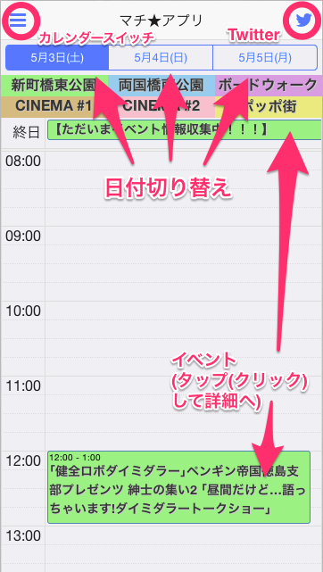
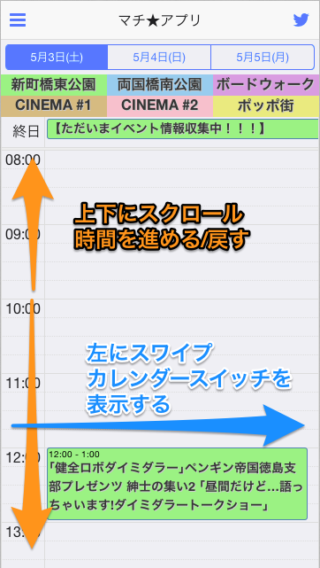
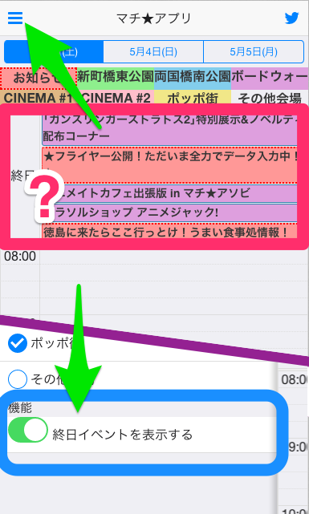
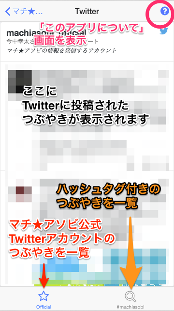
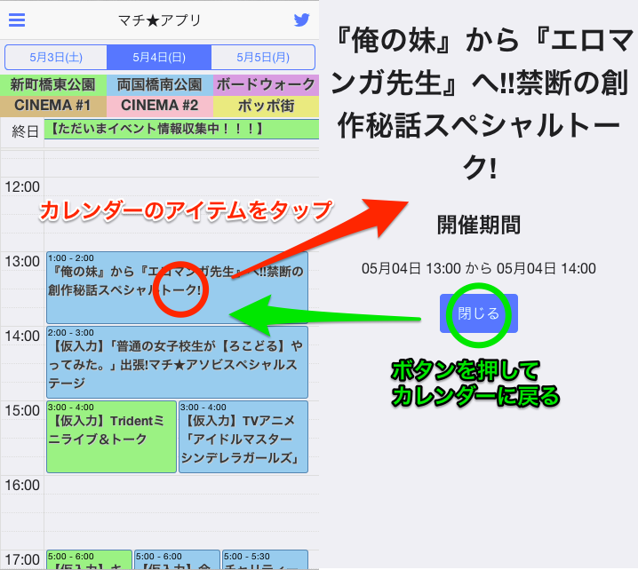

<ons-page class="center" ng-controller="TutorialViewCtrl">
    <ons-scroller class="center">
        <ons-button
                type="large"
                ng-click="dismiss()">
           この画面を閉じる
        </ons-button>

        <div class="markdown">
            <h1>マチ★アプリ</h1>

            <p>マチ★アプリをご覧いただきありがとうございます！</p>

            <p>このページではマチ★アプリの使い方など、<strong>最初に知ってほしいこと</strong>を記載しています。</p>

            <p>更に読み進めるには下にスクロールさせてください。</p>

            <p>もう一度確認したくなったら、「このアプリについて」ページから移動できます。</p>

            <p>↓↓↓</p>

            <h2>免責事項</h2>

            <p><strong>このアプリおよびアプリの製作者は「マチ★アソビ」の主催者とは関係がございません。</strong></p>

            <p>このアプリで提供されている情報について、正しい情報を提供することを心がけておりますが、
                情報の真偽の保証はできかねます。利用者様の判断の上でご利用下さい。</p>

            <p>このアプリを利用して生じたいかなる損害についても、
                当アプリ作成者および当アプリ制作に関与した者は
                一切の責任を負わないものといたします。</p>

            <p>このアプリの情報と主催者情報が食い違うとき、<em>当然ですが</em>主催者情報が正しいものとなります。</p>

            <h2>使い方</h2>

            <h3>基本的な画面説明</h3>

            <p></p>

            <ul>
                <li>カレンダースイッチ表示ボタン<ul><li>会場ごとのカレンダーの表示/非表示を切り替えます</li></ul></li>
                <li>Twitterページ移動ボタン<ul><li>マチ★アソビに関連するつぶやきを閲覧できます</li></ul></li>
                <li>日付切替えボタン<ul><li>日付を切り替えます</li></ul></li>
                <li>イベント<ul><li>会場ごとの催事です。タップすると詳細を確認できます。</li></ul></li>
            </ul>


            <h3>画面のスクロールとスワイプ</h3>

            <p></p>

            <ul>
                <li>上下にスクロール<ul><li>画面に表示されていない時間のイベントの確認ができます。</li></ul></li>
                <li>左にスワイプ<ul><li>カレンダースイッチを表示します。画面左上の表示ボタンと動作は同じです。</li></ul></li>
            </ul>

            <h3>終日イベントのON/OFF</h3>

            <p></p>

            <p>終日イベントはデフォルトで非表示になっています。表示させるには、「カレンダースイッチ」のメニューの下部にある「終日イベントを表示する」スイッチをONにしてください。</p>


            <h3>Twitter画面</h3>

            <p></p>

            <ul>
                <li>Official タブボタン<ul><li>マチ★アソビ公式Twitterアカウントのつぶやきを確認できます</li></ul></li>
                <li>machiasobi タブボタン<ul><li>Twitterに投稿されたつぶやきのうち、マチ★アソビの公認ハッシュタグ付きのつぶやきを確認できます</li></ul></li>
                <li>このアプリについて ボタン<ul><li>このアプリについての情報を確認できます。大したことは書いてないです。</li></ul></li>
            </ul>


            <h3>一覧と詳細の切り替え</h3>

            <p></p>

            <ul>
                <li>カレンダーのアイテムをタップ<ul><li>詳細画面に移動します。特記事項などがあれば確認できます</li></ul></li>
                <li>閉じるボタン<ul><li>詳細画面を閉じ、カレンダー画面に戻ります</li></ul></li>
            </ul>

            <h3>免責</h3>

            <p>カレンダーの情報について、正しい情報を提供できるよう最善を尽くしますが、
                情報の真偽も含めて、これら情報の利用は利用される皆様の判断の上でご利用下さい。</p>
        </div>

        <ons-button
                type="large"
                ng-click="ons.screen.dismissPage()">
            マチ★アプリを使う！
        </ons-button>
    </ons-scroller>
</ons-page>